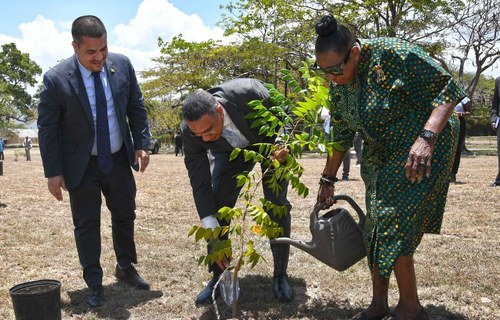

Community Cleanup and Tree Planting Day
Date: August 1, 2026
Location: Portmore Community Park, St. Catherine
Volunteers will assist with community cleanup, public education and tree planting. This event supports JCDA's goal of creating cleaner and greener public spaces.
See all events